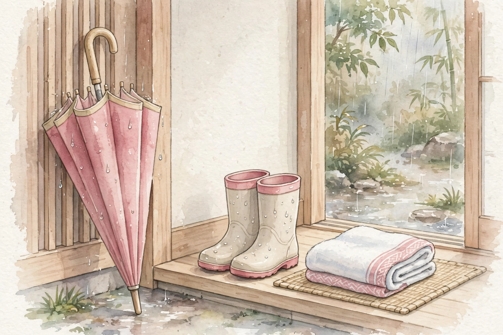

トップ ＞ ボディケア ＞ 雨の日・湿気の多い日の足まわりケア
雨の日・湿気の多い日の足まわりケア

雨の日は、足まわりが濡れたまま過ごす時間が長くなります。施術の現場でも、雨の日のお客様の足の状態は、晴れの日と違うことが多いものです。湿気の多い季節は、足だけでなく、靴や道具の管理まで含めて段取りが変わります。この記事では、雨の日・湿気の多い日の足まわりのケアの段取りを整理します。
帰宅したら、靴と靴下を先に処理する
段取りの最初は、濡れた靴下を脱ぎ、足を洗って、よく乾かすことです。濡れたままでいると、冷えやにおいの原因になります。足を洗うときは、指の間まで泡で洗い、タオルで指の間まで押さえるように拭きます。水分が残りやすいのは、まさにこの指の間です。洗面器にお湯をためて足だけ洗う方法も、入浴までのつなぎとして使えます。
靴は、脱いだら風通しのよい場所に置き、中まで乾かします。新聞紙を丸めて入れる、乾燥材を使う、といった昔ながらの方法は、今も有効な段取りです。濡れた靴を下駄箱にすぐしまうと、湿気がこもります。乾いてからしまう、という順番を決めておきます。玄関に、濡れた靴を一時置きする場所を決めておくと、帰宅後の流れが滞りません。
靴のローテーションで、乾かす時間を作る
雨が続く季節は、同じ靴を毎日はくと、乾く時間が取れません。2足を交互にはくローテーションを作ると、それぞれに乾かす日が生まれます。これは足のケアであると同時に、靴を長く使うための管理でもあります。中敷きを外して別に乾かすことも、乾燥の段取りに加えておきます。
長靴やレインシューズを使う日は、中の湿気の扱いが特に大切です。帰宅後に中を拭き、立てかけて乾かす手順を、雨の日の定番にしておきます。傘やレインコートも、乾かしてからしまうという点では、同じ段取りの仲間です。
足のケアは「乾いてから塗る」
雨の日に足へクリームを塗る場合は、足がしっかり乾いてからにします。水分が残った状態で塗ると、むらになりやすく、靴下への付き方も変わります。塗る量は控えめにし、滑りやすさにも注意します。塗るタイミングは、入浴後の乾いた状態に固定しておくと、雨の日も晴れの日も同じ型で回せます。
足まわりの道具、たとえば爪切りややすりも、湿気の多い季節は保管場所を見直す時期です。乾いた場所に置く、という基本は、雨の日にこそ意識したい点です。雨の日の段取りは、足を乾かす、靴を乾かす、この2点に集約されます。
外出先で足が濡れた場合の備えも、雨の日の段取りに入れておきます。替えの靴下をバッグに入れておく、職場に予備の靴を置いておく、といった備えです。濡れたまま一日を過ごすかどうかは、この備えで変わります。職場に置き靴がある方は、靴のローテーションに組み込むこともできます。
雨の日の翌日は、靴の状態を点検する日にします。乾き具合、におい、形の崩れ。点検を習慣にしておくと、靴の寿命も読みやすくなります。中敷きの交換時期も、この点検で判断できます。
湿気の多い季節は、足の爪まわりなど、細かい部位の手入れの頻度も見直す時期です。入浴後の足が乾いた状態で、指の間まで含めて状態を確かめる。雨の日のケアは、特別なことではなく、乾かすことと確かめることの積み重ねです。傘やレイングッズの置き場所も、玄関の動線の中で決めておくと、帰宅後の流れが滞りません。雨の日が多い季節ほど、段取りの型が力を発揮します。準備は、晴れの日のうちにしておくものです。足まわりの段取りが決まっていれば、雨の日も慌てずに帰宅後の流れへ進めます。天候に左右されない型を持つことが、季節を快適に過ごす土台になります。雨の日も、型があれば普段通りです。
セラフィナ「雨の日は、足も靴も『乾かす』が主役。帰宅後すぐの段取りだね」

セラフィナ｜美容の道具箱の案内役
「量と表示が分かれば、美容は失敗しない。」——セラフィナと白猫のモコが、買う前のチェックポイントを案内します。綺麗になりたい気持ちに正直に、でも表示は冷静に読むのが、このサイトの約束です。